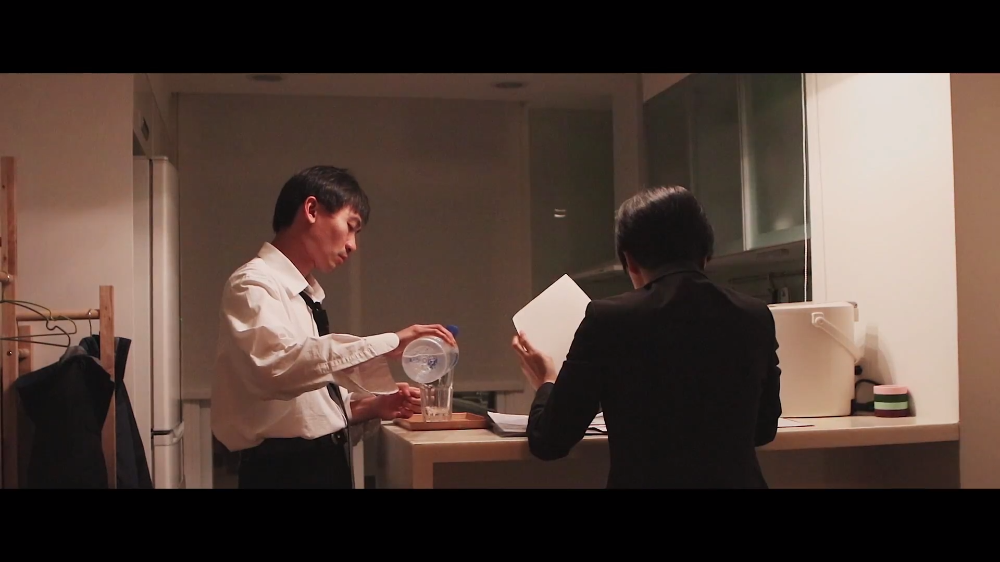

107年6月2日，在世新大學禮堂舉行的傳技展，各系一年級都發揮了所學所長，將這一年所學的技能、知識全部淋漓盡致地展現出來，我們資傳一甲費時3個月製作的微電影也在那時展出。
想知道我們的ㄐㄧㄚ是什麼嗎?
正片上映之前，我們在許多的宣傳活動中，都提到了「痂」這個字，也將「想知道我們的ㄐㄧㄚ是什麼嗎？」當作我們這次傳技展的宣傳標語。為甚麼是「痂」？到底這部10分鐘的微電影，各個角色的價值觀為何衝突？亦或是編劇在這當中想要傳達什麼訊息給觀眾呢？
晚歸的父親渾身酒味，妻子回家後也仍舊埋首於工作，這就是那女孩的家庭。(劇照)
每天看似和平的家，是不是有藏在傷口下的衝突和誤會？...家，到底是什麼？這是出自女孩內心的疑問，也是她最想要得到的答案。
台上10分鐘，台下十年功
這部總長10分多鐘的短片，看似簡單，但其實耗費了大量的時間、金錢，以及資傳一甲全班的人力，經歷了3個月的前置、拍攝、宣傳、拉贊、後製作業，還請了專業演員參與演出，才能有這樣的成果。
 《痂》全體工作人員大合照
《痂》全體工作人員大合照
3月初開始，工作人員就由總副召分為5組：企劃組、宣傳組、美編組、編劇組、機動組。企劃組負責控管影片企劃的各個流程時間，以及整合、監督所有工作人員；宣傳組負責管理官方粉專以及IG，並且著手處理新聞稿、宣傳海報、預告影片和擺攤、拉贊等活動；美編組負責處理影片中出現的道具，以及配合宣傳組製作宣傳單張、影片；編劇組則是負責整部影片的劇情、拍攝、後製，編劇、導演、攝影、燈光、演員都在這組；機動組負責支援各組。
在這次的傳技展中，許多人都是初次參與電影製作，雖然最後並未得獎，但我們在這次全班級性的活動學到了非常多，也讓資傳一甲更加團結了。
相關連結：資傳一甲傳播技能展粉專